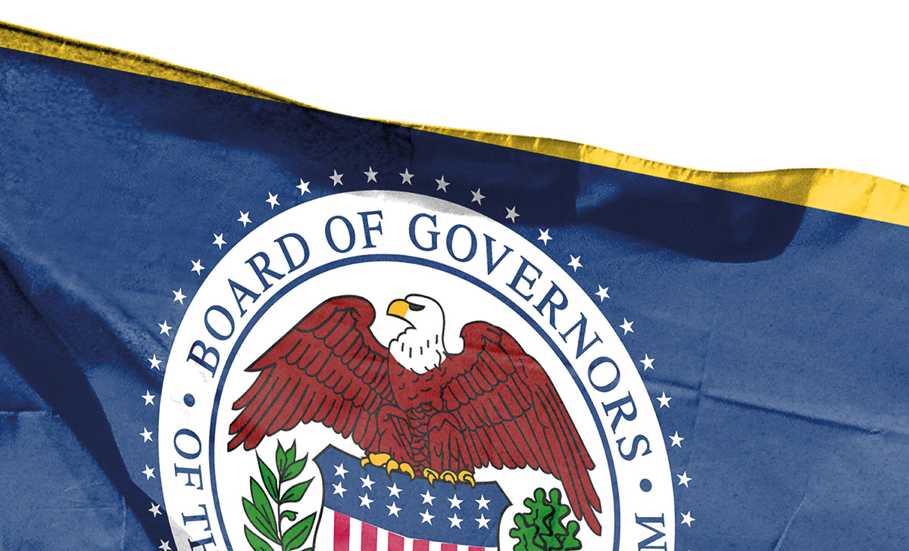
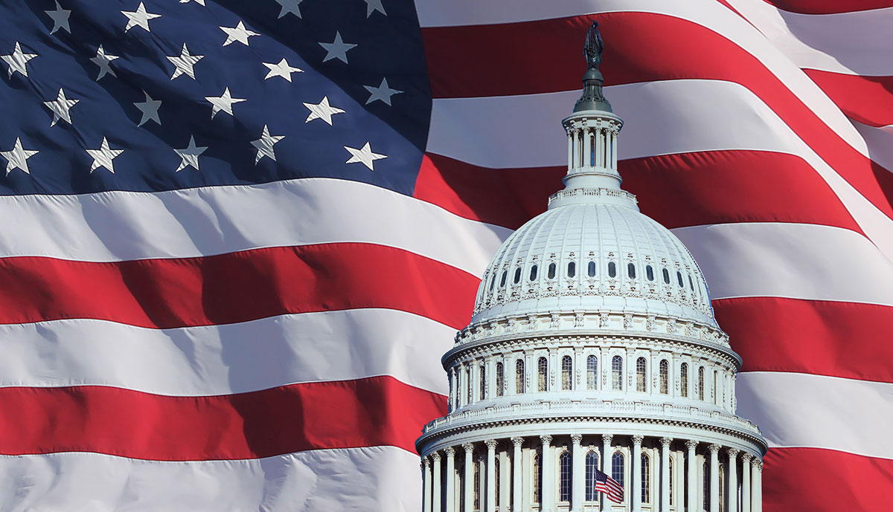
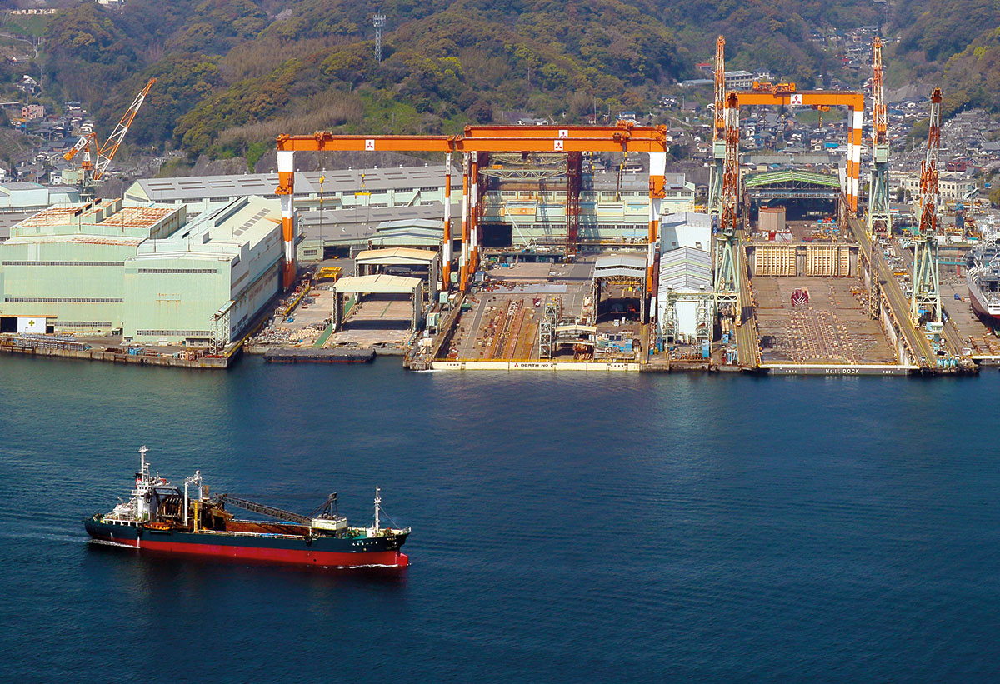
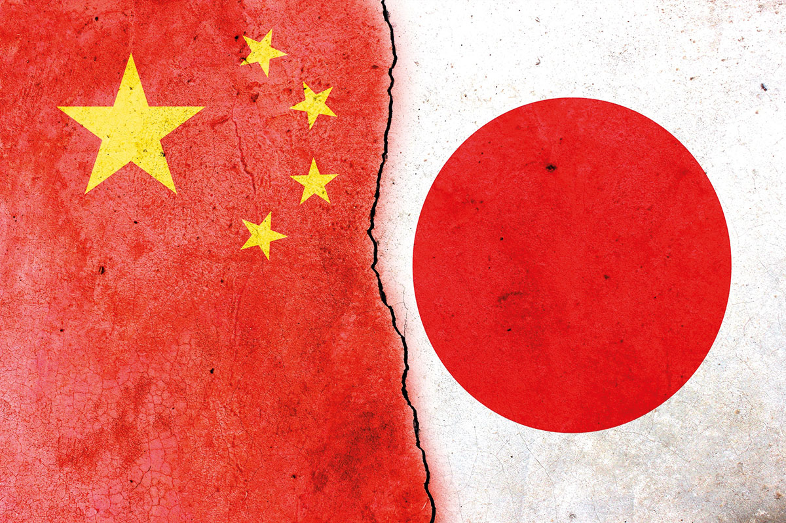

9월
9월 3일
북·중·러 3각 동맹 공식화
중국 전승절 열병식에서 시진핑·푸틴·김정은이 탈냉전 이후 처음으로 한자리에 서며 중국이 북·러와의 전략적 연대를 공개적으로 강조했다. 외신들은 이를 중국이 서방 중심 질서에 맞서는 새로운 중심축으로 자리매김하려는 신호로 해석했다. 다만 인도·튀르키예 등 주요 비서방국은 열병식 참여를 피해, 이 연대가 구조적 동맹보다는 제한적·실용적 협력에 머문다는 평가도 나온다.
9월 5일
일본 올해 최저임금 역대 최대폭 인상
일본의 올해 지자체별 시간당 최저임금이 전국 평균 1,121엔으로 집계돼 역대 최고치를 기록했으며, 상승폭도 66엔으로 사상 최대였다. 모든 지자체가 1,000엔을 넘긴 가운데 인구 감소 속 인력 확보 경쟁이 격화되며 47개 중 39개 지역이 정부 제시 기준을 웃돌았다. 다만 지자체 간 격차와 중소기업의 비용 부담은 확대될 것으로 예상된다.
9월 10일
멕시코, FTA 미체결국 관세 인상 예고
멕시코 정부는 국내 산업 보호와 아시아 수입품 감축을 위해 FTA를 체결하지 않은 국가에서 들어오는 제품에 대한 관세를 최대 50%까지 인상할 계획이다. 이번 조치는 자동차·철강·플라스틱 등 17개 전략 분야의 1,463개 품목에 적용되며, 약 520억 달러 규모의 수입품이 영향을 받을 것으로 멕시코 정부는 추산했다. 멕시코는 이번 조치가 무역 적자 축소와 자국 산업 보호를 위한 것이라고 밝혔다.
9월 14일
대만, 22년 만에 1인당 GDP 한국 추월 전망
대만 통계청에 따르면 올해 2분기 대만 실질 GDP는 전년 대비 8.01% 증가하며 고성장을 기록했고, 이에 따라 연간 성장률 전망치도 4.45%로 상향됐다. 올해 대만의 1인당 GDP는 3만 8,066달러로 한국의 3만 7,430달러를 넘어설 것으로 예상되며, 내년에는 4만 달러를 돌파할 가능성도 제시됐다. 반면 한국의 2분기 실질 GDP 증가율은 0.6%에 그치며 성장세가 둔화된 가운데, 전문가들은 반도체·AI 산업을 중심으로 두 나라 간 격차가 더욱 벌어질 수 있다고 보고 있다.
9월 18일
미 연준, 기준금리 0.25%p 인하
미국 연방준비제도(Fed)는 기준금리를 4.25∼4.50%에서 4.00∼4.25%로 0.25%포인트 인하하며 9개월 만에 금리 인하를 재개했다. 연준은 최근 경제 성장 둔화, 고용 둔화 등을 금리 인하 배경으로 제시했으며, 올해 말 기준금리 예상치를 3.6%로 제시해 연내 0.25%포인트씩 두 차례 추가 인하 가능성을 시사했다. 이번 결정에서는 신임 연준 이사 스티븐 마이런이 0.50%포인트 인하를 주장해 만장일치가 이루어지지 않았고, 연준은 올해 미국의 경제성장률 전망치를 1.6%로 상향했다.

9월 22일
영국·캐나다, 팔레스타인 국가 공식 인정
영국 정부와 캐나다 정부는 21일(현지 시간) 팔레스타인을 국가로 인정한다고 공식 발표했으며, 이는 주요 7개국(G7) 중 첫 공식 인정이라는 점에서 주목된다. 두 나라의 발표로 팔레스타인을 주권국가로 인정한 유엔 회원국은 호주와 포르투갈을 포함해 151개국으로 늘었고, 프랑스·벨기에·룩셈부르크도 추가 인정을 예고했다. 이에 이스라엘 정부는 강하게 반발하며 요르단강 서안 일부 합병 가능성을 시사했고, 미국 정부는 팔레스타인 국가 인정에 반대 입장을 밝혔다.
10월
10월 1일
미 연방정부, 예산안 불발로 7년 만에 셧다운 돌입
미국 연방정부는 2025회계연도 예산안을 기한 내 처리하지 못해 1일 0시 1분(미 동부 시각)부터 7년 만에 셧다운에 들어갔다. 미국 상원은 공화당과 민주당이 각각 발의한 임시예산안이 모두 부결되면서 정부 운영을 이어갈 단기 재원 확보에 실패했다. 이에 미국 연방정부는 필수 인력을 제외한 공무원들이 무급 휴직에 들어가며 일부 공공 서비스가 중단되는 상황을 맞게 됐다.
10월 13일
이스라엘·하마스, 교환 성사 “전쟁은 끝났다”
이스라엘과 팔레스타인 무장정파 하마스는 13일(현지 시간) 인질 교환을 진행했다. 하마스는 이스라엘 생존 인질 20명을 석방했고 이스라엘 정부는 이에 상응해 팔레스타인 수감자 약 2,000명을 석방할 계획이다. 트럼프 미국 대통령은 휴전 합의 1단계 발효와 교전 중단을 두고 “전쟁은 끝났다”고 강조하며 국제 안정화군과 평화위원회 구성이 이어질 것이라고 밝혔다.
10월 17일
EU, ‘방위 대비태세 로드맵 2030’ 공개
EU 집행위원회는 16일(현지 시간) 방위 대비태세 강화를 위해 2027년까지 회원국 무기의 40% 이상을 공동 구매하는 계획을 밝혔다. 동부전선 감시, 드론 방어, 유럽 방공, 우주방위 등 네 가지 핵심 사업을 꼽았다. EU는 신규 예산 없이 회원국 국방비 증가분과 ‘유럽안보행동(SAFE)’ 대출 프로그램을 활용해 이 계획을 진행할 예정이다.
10월 21일
다카이치 사나에, 일본 첫 여성 총리로 선출
다카이치 사나에 일본 자민당 총재가 21일 중의원·참의원 총리 지명선거를 거쳐 일본 최초의 여성 총리로 선출됐으며, 나루히토 일왕으로부터 임명장을 받은 뒤 새 내각을 출범시킬 예정이다. 비세습 여성 정치인으로 강경 보수 성향을 보여 온 다카이치 총리는 공명당 이탈 이후 일본유신회와 연립정부 구성을 통해 총리직에 올랐으나, 양원 과반 확보가 어려워 향후 국정 운영이 쉽지 않을 것으로 전망된다.
10월 30일
ECB, 3연속 금리 동결
유럽중앙은행(ECB)은 30일(현지 시각) 통화정책회의에서 예금금리 2.00%, 기준금리 2.15%, 한계대출금리 2.40%를 모두 동결했다. ECB는 인플레이션이 중기 목표치인 2%에 근접해 있으며 경제도 성장세를 유지하고 있다고 설명했다. 이번 결정으로 유로존 예금금리와 한국 기준금리(2.50%)의 격차는 0.50%포인트로 유지됐다. 유로존 물가는 2% 안팎에서 안정된 흐름을 보이고 있으며, ECB는 올해와 내년 물가상승률을 각각 2.1%, 1.7%로 전망하고 있다.
10월 30일
미 연준, 올해 두 번째 금리 인하
미국 연방준비제도(Fed)는 29일(현지 시각) 기준금리를 0.25%포인트 인하해 연 3.75~4.00%로 조정했으나, 연방정부 셧다운 장기화로 공식 통계가 사라진 상황에서 ‘이용 가능한 지표’에 의존할 수밖에 없다고 밝혔다. 제롬 파월 의장은 12월 추가 금리 인하가 결코 기정 사실이 아니라고 언급해 금리 동결 가능성을 시사했다. 시장은 파월 의장의 발언 이후 12월 금리 인하 기대를 급격히 낮췄고, 뉴욕 증시와 국채금리가 즉각 반응하며 불확실성이 커졌다고 주요 외신은 전했다.
11월
11월 1일
백악관, 미·중 무역 합의 팩트시트 공개
미국 백악관은 도널드 트럼프 미국 대통령과 시진핑 중국 국가주석의 부산 정상회담 이후 양국이 상호 제재를 대거 해제하고 내년 11월까지 관세 강화 조치를 유예하기로 합의했다고 밝혔다. 중국은 희토류 수출 통제 철회, 미국 기업 대상 반독점·반덤핑 조사 종료, 조선·물류 분야 보복 조치 중단 등 광범위한 조치를 철회하며, 미국은 펜타닐 관세 인하와 ‘계열사 규칙’ 적용 1년 유예 등을 이행하기로 했다. 백악관은 이번 합의를 미국 경제·안보 강화를 위한 성과로 평가했다.
11월 3일
AI 열풍, 3조 달러 데이터센터 투자로 확산
모건스탠리는 2028년까지 글로벌 데이터센터 투자가 3조 달러에 근접할 것으로 전망하며, 절반가량이 사모대출 등 부채로 조달될 것으로 분석했다. 엔비디아·마이크로소프트·구글·메타 등 빅테크가 AI 인프라 투자를 주도하고 있으나, 기업들의 수익 구조가 아직 검증되지 않아 “투자가 수익을 앞서간다”는 우려가 제기되고 있다. 시장에서는 부채 기반 투자 확대가 경기 둔화 시 금융 시스템 리스크로 이어질 수 있다는 경고와 함께, AI 수익성이 불확실할 경우 닷컴 버블과 유사한 거품 붕괴 가능성도 거론되고 있다.
11월 12일
미 연방정부, 43일 만에 셧다운 종료
미국 연방정부 셧다운이 12일(현지 시간) 종료됐다. 하원이 임시 예산안을 찬성 222표로 통과시키고, 도널드 트럼프 미국 대통령이 서명함에 따라 43일간 이어진 역사상 최장 셧다운이 종료된 것이다. 셧다운의 핵심 쟁점은 ‘오바마케어’ 보조금 연장이었으며, 공화당의 반대 속에 시작됐지만 공화당 지도부가 상원 표결을 약속하면서 일부 민주당 의원이 찬성표로 돌아섰다. 이번 임시 예산안은 내년 1월 30일까지 연방정부 자금을 기존 수준으로 복원한다는 내용이다.

11월 14일
일본 정부, ‘조선업 재생 프로젝트’ 본격화
일본 정부가 자국 조선업체 간 통합이나 합병을 원칙적으로 허용할 예정이다. 일본 정부는 2035년까지 선박 건조량을 현재의 두 배 수준으로 늘리고, 정부와 업계가 각각 약 3,500억 엔씩 출연해 총 1조 엔 규모를 투자하는 ‘조선업 재생 프로젝트’를 추진하면서 AI·로봇 기반 생산기술과 차세대 선박 개발을 지원할 계획이다. 미국과 일본 정부가 지난달 조선업 협력 각서를 체결한 가운데, 일본 조선업은 현재 세계 3위로 중국과 한국에 크게 밀린 상황이다.

11월
11월 15일
중국, 대만 발언 반발하며 일본 여행 자제 권고
중국 외교부는 14일 일본 정치인의 대만 관련 발언이 중국인의 신변 안전을 위협한다며 자국 국민에게 일본 여행 자제를 권고했다. 다카이치 사나에 일본 총리가 대만 유사시 일본 개입을 시사한 이후 양국이 상호 대사 초치와 고강도 비난을 주고받으며 갈등이 급격히 심화된 상황이다. 후쿠시마 오염수 방류 이후 다소 완화됐던 분위기와 달리, 일본의 전략적 모호성 철회 조짐에 중국이 강하게 반발하면서 중일 관계가 다시 긴장 국면에 접어들고 있다.

11월 19일
중일 국채금리 사상 첫 역전 가능성
일본 10년물 국채 금리가 19일 1.77%로 상승했다. 이는 2008년 글로벌 금융위기 이후 17년 만의 최고 수준이다. 이에 따라 중국 10년물 국채 금리(1.81%)와의 격차가 사상 최저 수준으로 좁혀졌다. 중국은 경기 부진과 증시 약세로 안전자산 수요가 몰리며 국채 금리가 낮게 유지된 반면, 일본은 다카이치 사나에 총리의 17조 엔 규모 추가경정예산안 논의로 재정 악화 우려가 커지면서 금리가 급등했다.
11월 20일
연준, 12월 금리 인하 놓고 내부 분열 심화
미국 연방준비제도(Fed)가 공개한 10월 회의 의사록에는 위원들이 12월 금리 인하 여부를 두고 “강하게 엇갈린 견해”를 보였다는 내용이 담겼다. 도널드 트럼프 미국 대통령의 금리 인하 압박까지 겹치며 정책 혼선이 커지는 가운데, 연방정부 셧다운으로 노동·물가 등 핵심 경제 지표 발표가 지연돼 의사결정 불확실성도 확대되는 상황이다. 전문가들은 이러한 분열이 투자자와 소비자의 전망 형성을 어렵게 하고, 12월 FOMC에 대한 시장 불확실성을 더욱 높일 것으로 보고 있다.
11월 20일
미국, 우크라에 일방적 새 휴전안 제시
트럼프 행정부는 우크라이나에 러시아가 점령하지 않은 돈바스 지역까지 포함해 동부 전역을 러시아에 넘기고, 평화유지군 배치 금지·나토 가입 보류·장거리 타격무기 포기 등을 요구하는 28개항의 휴전안 초안을 제시했다. 이는 러시아 측 요구를 대폭 반영한 내용으로 유럽 동맹국들은 “사실상 항복 문서”라며 공개적으로 ‘수용 불가’의 입장을 표명했다.

11월 23일
G20 정상회의 첫날부터 ‘남아공 선언’ 채택
아프리카 대륙 최초로 열린 G20 정상회의에서 회원국들은 22일(현지 시간) 회의 첫날 ‘G20 남아프리카공화국 정상선언’을 채택했으며, 이는 정상선언을 폐막 시점에 채택하던 관례와 달리 미국의 보이콧에 맞선 결정으로 평가된다. 선언문은 G20의 다자주의 원칙을 재확인하고 WTO 규범에 반하는 일방적인 무역 관행에 대응하겠다고 밝혔다. 한편, 2028년 G20 정상회의를 한국에서 개최한다고 공식 발표했다.

11월 24일
일본, 추가 금리 인상 시동
일본 10년물 국채 금리가 1.8%에 육박하며 17년 만에 최고치를 기록하자, 미국·일본 금리 격차가 빠르게 축소되고 엔캐리트레이드 자금의 본국 환류 가능성이 제기되고 있다. 일본 정부의 대규모 경제대책과 재정 악화 우려로 엔화가치와 국채가격이 급락한 가운데, 금리 상승이 이어질 경우 해외에 투자된 엔화 자금의 청산 압력도 커질 수 있다는 분석이 나온다. 전문가들은 일본 기업들의 결산 시기와 한국의 원화 약세·재정 부담 등을 고려할 때, 엔캐리트레이드가 본격 청산될 경우 한국 자본시장에도 충격이 확대될 수 있다고 우려했다.